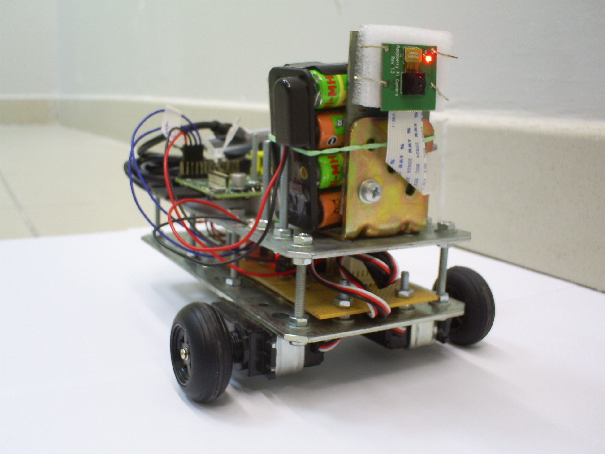
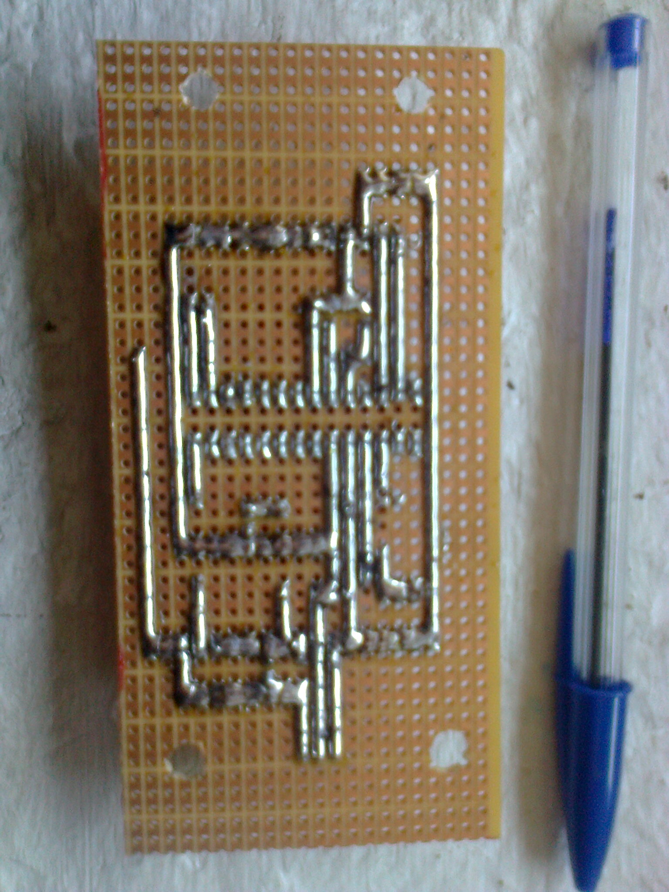
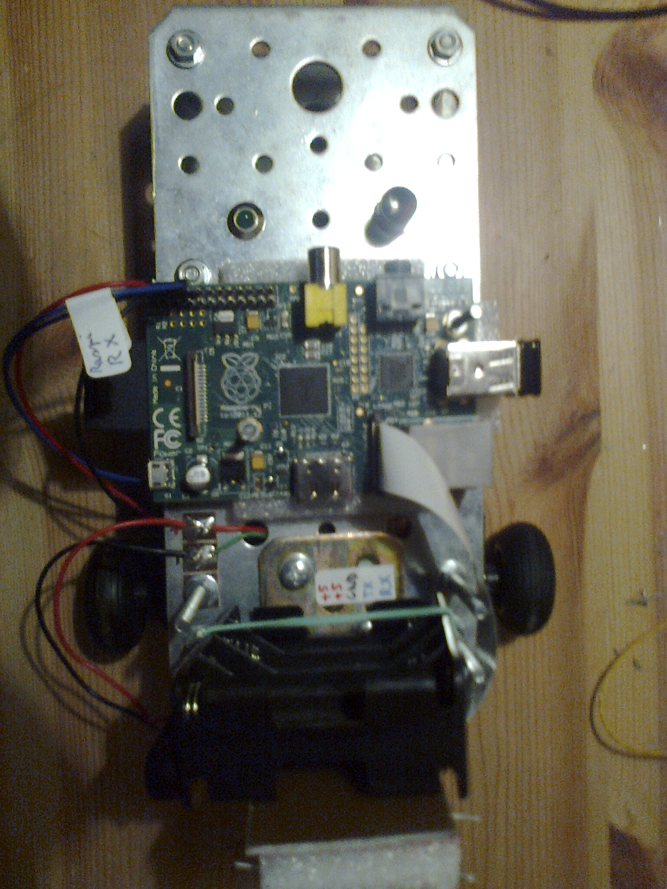

Odyssey
{kind=link}
Odyssey est le nom donné au projet de fin d'études que deux de mes camarades et moi-même avons réalisé lors de notre dernière année d'école d'ingénieur.
Nous avons conçu et fabriqué un robot mobile en partant de zéro, sur la base d'un sujet que nous avons nous-mêmes proposé.
Le but du projet était de créer un robot muni d'une caméra qui pouvait être contrôlé depuis un PC ou un smartphone via une simple connexion WiFi.
Caractéristiques techniques
Voici un aperçu des caractéristiques techniques du robot :
- Raspberry Pi modèle B cadencé à 700MHz et tournant sous Raspbian.
- Microcontrôleur PIC16F876 cadencé à 3.68MHz dédié au contrôle des moteurs et à la mesure de la tension de la batterie.
- Batterie constituée de 8 cellules NiMH de 2500mAh chacune.
- Dongle WiFi N Edimax (Realtek 8188CUS) pour assurer la connexion WiFi.
- Raspicam (1080p @ 30fps), utilisée en mode 640x480 @ 24fps pour faciliter le streaming vidéo via WiFi.
- Propulsion assurée par deux servomoteurs à rotation continue DGServo S04NFSTD capables de fournir chacun un couple de 3500g/cm.
Description du projet
L'acquisition de la vidéo et la gestion de la connexion WiFi sont assurées par un mini ordinateur Raspberry Pi fonctionnant sous Raspbian.
Les tâches "temps réel" sont confiées à un petit circuit basé sur un microcontrôleur PIC. Ce circuit contrôle les moteurs et mesure la tension de la batterie.
Pourquoi avoir choisi le nom d'Odyssey ? Premièrement parce que le projet promettait d'être homérique, et parce que ça sonnait bien ! Nous avons ensuite nommé les différents modules du robot selon des noms de dieux grecs.
Le robot est ainsi composé de deux modules :
- Mercury, le dieu des voyages, est le circuit de contrôle des moteurs.
{kind=link}
- L'Œil Unique,
SauronPolyphemus représente la caméra du robot (une Raspicam) et le Raspberry Pi qui la gère.
{kind=link}
Les programmes ont aussi eu droit à leurs petits noms :
- Le contrôle du robot est assuré par Jupiter, dieu des dieux, qui est une application PC permettant de diriger le robot tout en visualisant la vidéo capturée par la caméra.
{kind=link}
- Enfin, Io, un des satellites de Jupiter, rend possible le contrôle du robot par un smartphone ou une tablette Android.
{kind=link}
Châssis
Commençons par décrire la mécanique du robot, qui se veut robuste et simple à réaliser. Le châssis du robot est constitué de deux plaques superposées d'acier galvanisé de 2mm d'épaisseur. Ceci garantit un châssis robuste et sert aussi de dissipateur thermique.
{kind=link}
Deux servomoteurs à rotation continue dotés chacun d'un couple de 3.5Kg/cm propulsent le robot. Une bille en acier sert de roue folle.
Les servomoteurs sont fixés sur le châssis par de petites plaques en acier pliées à l'aide d'un étau.
La première photo montre la partie inférieure du châssis, sur laquelle on peut distinguer le morceau de platine d'essai qui accueillera le circuit chargé du temps réel.
La seconde photo illustre la fixation des servomoteurs sur le châssis.
{kind=link}
{kind=link}
Voici une photo de la partie supérieure du châssis. Elle supporte le Raspberry Pi, la Raspicam et la batterie.
{kind=link}
La Raspicam est maintenue sur une couche de polystyrène isolant (son propre polystyrène d'emballage...) à l'aide de pattes de diodes soudées sur un bout de circuit. Ce bout de circuit est boulonné à une équerre en acier elle-même boulonnée au châssis. Comme on le verra sur des photos plus avancées, cette équerre sert aussi à maintenir la batterie. J'ai dû recourir à ce moyen car les trous de fixation de la Raspicam sont très petits et sont entourés de composants qui gênent le serrage par des écrous.
{kind=link}
Les deux parties du châssis sont reliées entre elles par 8 boulons de 4x40mm.
{kind=link}
Electronique
Le Raspberry Pi n'était pas en mesure de gérer le PWM nécessaire à chacun des servomoteurs. De plus, il ne disposait pas d'ADC et ne pouvait donc pas mesurer la tension de la batterie.
J'ai ainsi conçu un petit circuit autour d'un PIC16F876, un petit microcontrôleur qui comporte 2 modules PWM hardware ainsi que plusieurs ADC. De plus, l'EEPROM interne du PIC permet d'y stocker les valeurs de calibrage de la vitesse de rotation des moteurs.
Ce circuit se charge aussi d'alimenter tout le robot. La tension stable de 5V requise est obtenue à l'aide d'un régulateur linéaire LDO LM1085 dont le rendement est beaucoup plus élevé qu'un classique 7805. Ce composant est aussi capable de fournir un courant plus important qu'un 7805, ce qui est nécessaire pour le robot.
En consommation maximale (heureusement jamais atteinte), le Raspberry Pi modèle B consomme 700mA, la caméra 300mA, chaque moteur 400mA et un vieux dongle WiFi G USB monte jusqu'à 450mA. La somme de tous ces courants est supérieure à ce qu'un pauvre 7805 peut délivrer.
Voici le schéma électrique du circuit :
{kind=link}
Le circuit a été réalisé sur une plaque d'essai, comme le montrent les photos suivantes.
{kind=link}
Le régulateur de tension chauffe de façon non négligeable à cause de la puissance qu'il dissipe en chaleur. Le châssis du robot est alors utilisé comme dissipateur thermique.
Attention ! La languette métallique du LM1085 est reliée à Vout et non à la masse, le châssis ne peut donc pas servir de plan de masse !
{kind=link}
Logiciel
Les programmes originaux destinés au projet scolaire se trouvent sur le dépôt git suivant : https://github.com/DenisNicolasCarlus/odyssey.
Je vais cependant détailler ici le fork du projet que j'ai fait pour le simplifier et éviter des dépendances logicielles difficiles à satisfaire. Il se trouve sur le dépôt https://github.com/RICCIARDI-Adrien/Odyssey.
Le logiciel est composé de quatre parties :
- Microcontroller contient le firmware du PIC ainsi que le schéma électrique du circuit.
- Network Control est le démon Linux qui tourne sur le Raspberry Pi. Il attend des commandes envoyées sur le réseau WiFi par le programme Remote et les communique au PIC.
- Manual Control est un programme de mise au point dénué de serveur (il faut se connecter sur le Raspberry Pi en SSH puis lancer le programme). Il dispose d'une interface ncurses minimale permettant de calibrer les différentes vitesses des moteurs (vitesse en marche avant et en marche arrière) et de tester le hardware du robot.
- Remote est une application graphique écrite en Java (dans le seul but de faire fonctionner le programme sous Windows et Mac en plus de Linux) qui envoie les commandes de l'utilisateur au démon Linux.
Le flux vidéo issu de la caméra est capturé par le programme raspivid et envoyé par les airs au PC grâce à l'utilitaire socat. Il suffit d'utiliser le lecteur vidéo MPlayer sur le PC pour afficher le flux H264 brut.
Le Raspberry Pi fait point d'accès WiFi dans le but de simplifier la mise en œuvre du robot (ceci évite de devoir connecter à chaque fois le robot au réseau local du lieu où il se trouve).
Le démon Linux, écrit en C, est en fait un serveur TCP qui attend les commandes envoyées par un client (l'application Remote). Dès qu'une commande est reçue, elle est communiquée au PIC à l'aide d'un lien série à 115200 bauds câblé sur les UART matérielles du Raspberry Pi et du PIC.
Des scripts à la sauce System V init se chargent de lancer automatiquement les programmes nécessaires au démarrage du système.
Show room
Là où le robot montre son meilleur profil...
{kind=link}
{kind=link}
{kind=link}
{kind=link}
{kind=link}
{kind=link}
{kind=link}
{kind=link}
{kind=link}
{kind=link}
{kind=link}
Et pour terminer, voici la vidéo de présentation du projet :
Retour au menu des projets
Page créée le 11/03/2015.